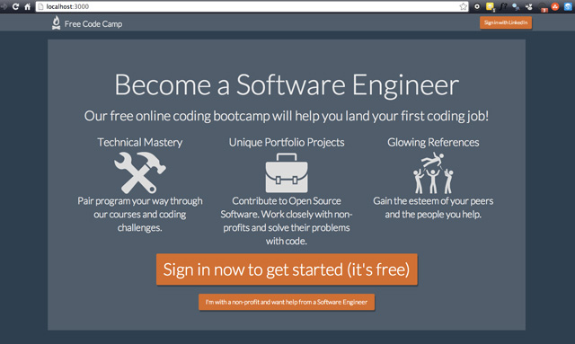

Không, xin đừng 'nhảy' vào học code!
Bạn NÊN học code. Nhưng đừng ảo tưởng, và cũng đừng vội vàng.
Nước Mỹ dường như đang trải qua một cơn sốt học code. Cựu thị trưởng New York và cũng là huyền thoại kinh doanh Michael Bloomberg cùng các tổ chức phi lợi nhuận như Code.org đều lên tiếng khẳng định code là một kỹ năng cần thiết cho cơ hội việc làm của tương lai. Kênh truyền hình HBO có hẳn một series xây dựng nên hình tượng những anh chàng coder trẻ tuổi làm việc và… hút cỏ thâu đêm, cùng lúc kiếm hàng triệu USD.
Những thiên tài code như Elon Musk, Mark Zuckerberg và Bill Gates trở thành thần tượng bất diệt của giới trẻ - họ đều có khởi điểm là coder.
Không khó để nhận ra cơn sốt “học code” đã lan tỏa cả tới Việt Nam, đặc biệt là đối tượng bạn trẻ năng động đến từ các trường đại học kinh tế. Rất nhiều cơ sở giảng dạy lập trình, bao gồm cả trực tuyến và theo lớp, ra đời với những lời hứa hấp dẫn về khả năng thay đổi cuộc sống và dĩ nhiên là việc làm đảm bảo. Trào lưu startup ngày một nóng hơn, kéo theo những ấn tượng vô cùng tích cực về kỹ năng code. Trên Facebook, tôi đã nhiều lần bắt gặp những câu status bày tỏ nguyện vọng học code như thể đó là một thứ skill thời thượng, cần phải có của thời đại này.
Bài viết này tôi xin được gửi tới những bạn đã theo các ngành nghề khác, nay đang cân nhắc chuyển thành coder kiếm sống hoặc đơn giản là muốn có thêm kỹ năng trong cuộc sống. Nếu bạn đang đứng trước ngưỡng cửa đại học, những ý kiến được chia sẻ dưới đây có thể giúp bạn có một cái nhìn chính xác hơn về nghề coder.
Những suy nghĩ sai lầm
Nói “Em biết HTML” có vẻ đang ấn tượng không kém gì “Em có TOEIC 900”. Nhưng sự thật là “code” HTML không hề khó. Nếu “khó” thì đến cả những dòng code căn bản của C hay C++ cũng chỉ khó ngang với các môn bạn đã học ở trường cấp 3 mà thôi. Và điều đó làm nảy sinh một suy nghĩ sai lầm: vì ai cũng có thể code, ai cũng nên học code.
Cách đây vài ngày, tôi có thấy một cậu em học kinh tế mới ra trường bày tỏ tham vọng học code (tạm gọi là cậu A). Khi tôi hỏi muốn học ngôn ngữ gì, bạn trả lời: Java. Lý do là bởi bạn mê Android, muốn code ra những ứng dụng phục vụ cho công việc của bản thân. Và bạn cũng đọc được trên brochure của một trung tâm trực tuyến nọ rằng “Java là ngôn ngữ phổ biến nhất của thế giới enterprise (doanh nghiệp)”. Nghe có vẻ rất phù hợp với tham vọng công việc của cậu ấy.

Song cách suy nghĩ này có vấn đề. Java là một ngôn ngữ “hướng đối tượng” - một trong những khái niệm căn bản nhất của thế giới lập trình. “Nhảy” vào Java ngay từ đầu cũng có nghĩa rằng người học có thể không hiểu rõ về những giá trị mà lập trình hướng đối tượng mang tới. Như vậy A có thể sẽ bỏ phí những bài học quan trọng về tư duy đối tượng – cũng giống như người ta dạy “xổi” Javascript, PHP cho những người không rành kỹ nghệ phần mềm nhưng lại muốn làm web vậy. Với giới hạn thời gian quá ngặt nghèo, tôi không nghĩ cậu em của tôi sẽ có thể tham gia code trên những sản phẩm có nghĩa, chưa kể code ứng dụng di động và code ứng dụng doanh nghiệp là 2 mảng vô cùng khác biệt.
Ví dụ này nói lên một sự thật rằng thế giới code rất rộng lớn, và nếu thực sự máu code thì bạn phải bỏ công tìm hiểu thật kỹ bạn sẽ học cái gì, thứ đó có mang lại lợi ích thiết thực cho bạn hay không – nhất là nếu bạn sẽ không dành toàn tâm toàn ý cho những dòng code.
Đừng học code theo kiểu “trang trí”
Một cậu em khác lại nói “Em muốn học Swift”. Nhưng khi hỏi “Vì sao em muốn học Swift mà không học Pascal chẳng hạn”, cậu ấy trả lời “Vì em quen một anh CEO code camp hay tổ chức hackathon Swift”.
Việc học code một cách nghiêm túc, để những hiểu biết về code có thể mang lại ý nghĩa cho chính bản thân bạn là không hề dễ dàng. Bạn rất nên học code để luyện tư duy và xây dựng cách làm việc, nhưng nếu bạn nghĩ rằng bạn có thể đem những dòng code của mình áp dụng vào công việc thực tế, bạn sẽ phải bỏ ra rất nhiều công sức đầu tư. Kể cả bạn từng có giải tin học cấp thành phố, kể cả nếu bạn đã từng tốt nghiệp chuyên toán tin (rồi chuyển sang tài chính hay quản trị kinh doanh), code nghiêm túc để giải quyết các vấn đề thực tế vẫn sẽ không hề đơn giản.
Vậy nên nếu bạn muốn học code để đẹp CV, chỉ để sếp coi bạn là chuyên gia công nghệ của Phòng Truyền Thông hay Phòng Tài Chính, để có thể trò chuyện ở tư thế “ngang hàng” với bộ phận Information System trong công ty thì bạn hãy nghĩ lại. Chừng nào bạn chưa hiểu được code có thể áp dụng như thế nào vào thực tế, những gì bạn biết vẫn sẽ chỉ là “múa rìu qua mắt thợ”. Bộ phận IS trong công ty (kéo theo đó là ông sếp của bạn), nếu đủ hiểu biết, sẽ nhanh chóng nhận ra rằng những “kỹ năng IT” mà bạn khoe khoang trên CV là vô nghĩa.
Đừng vội vã nhảy vào học những thứ ngôn ngữ được các trung tâm trực tuyến tung hô để rồi cuối cùng đứng lưng chừng giữa “hiểu” và “vô ích”. Kịch bản đó cũng giống như khi bạn đi “khoe” với nhà tuyển dụng rằng bạn hiểu công thức kế toán, hiểu Dr là gì và Cr là gì nhưng lại chưa một lần cân được sổ sách thực tế, chưa từng hiểu giá trị của công việc kế toán với hoạt động của công ty. Tất cả những gì bạn đã học về code, nếu đi sai đường, hoàn toàn có thể chỉ là sự phí phạm về thời gian và công sức.
Bạn NÊN học code
Khi đọc những dòng ở trên, bạn có thể mang suy nghĩ rằng tôi cậy mình là một kỹ sư phần mềm đem kiến thức ra “lòe” bạn rằng những gì tôi biết là cao siêu quá tầm với của bạn. Rằng bạn không nên học code, ngành nghề mà tôi cùng vô số bạn trẻ khác đã “đốt” ít nhất 4 năm đại học để theo đuổi.
Sự thực không phải như vậy. Tôi nghĩ tất cả mọi người đều NÊN học code. Nhưng không phải ai cũng nên học đến mức code ra được sản phẩm hoàn thiện.
Steve Jobs đã từng nói “Hãy học lập trình. Nó dạy bạn cách suy nghĩ” và sự thật là như vậy. Code nói riêng và toàn bộ ngành IT nói chung có nhiệm vụ là cải thiện cuộc sống, cải thiện quy trình làm việc của con người. Các khái niệm của code, ví dụ như lập trình hướng đối tượng hay các framework (tạm hiểu là các giải pháp được thiết kế sẵn cho các vấn đề hay gặp) chẳng hạn, đều sinh ra để cải thiện quy trình làm việc cũng như sản phẩm của coder. Khi tìm hiểu những khái niệm này, bạn sẽ thấy sự kỳ diệu nằm trong tư duy của người làm phần mềm.
Ví dụ, nghề code có khái niệm “DRY – Don’t Repeat Yourself”. Hãy thử tưởng tượng tôi có một đoạn code làm một tác vụ cụ thể sẽ cần sử dụng đi sử dụng lại nhiều lần, ví dụ như tính năng đặt tên file dữ liệu theo định dạng: [loại dữ liệu_phút giờ ngày tháng] rồi lưu vào C:\data. Tôi sẽ cần phải dùng tính năng này để lưu file về các sự cố trong ngày, những người dùng đã ghé thăm trang web ngày hôm nay v…v…, và theo cách làm việc kiểu “mù code” thì cứ chỗ nào cần dùng, tôi sẽ paste đoạn code thực hiện tính năng lưu file.
Nhưng điều gì sẽ xảy ra nếu tôi không muốn lưu vào C:\data nữa mà muốn lưu vào C:\save? Điều gì sẽ xảy ra nếu tôi không muốn lưu theo định dạng tên [loại dữ liệu_ngày tháng] thay vì [loại dữ liệu_phút giờ ngày tháng] như ở trên? Nếu copy code ra nhiều nơi tôi sẽ phải mở từng đoạn code đã paste rồi sửa lại. Làm như vậy không chỉ tốn thời gian mà còn rất dễ bỏ sót.
Giải pháp ở đây là “gói” riêng các đoạn code có nhiệm vụ lưu file vào một chỗ (chính xác hơn là một function) và khi nào cần thì gọi tới hàm đó để truyền vào nội dung file cần ghi. Nếu cần thay đổi định dạng tên file ghi ra hay vị trí lưu file, tôi chỉ cần thay đổi duy nhất các dòng code bên trong hàm này, không tốn thời gian và cũng không thể bỏ sót.
Đây chỉ là một ví dụ nhỏ cho thấy vì sao người học code biết cách tư duy mạch lạc, logic và có trọng tâm. Nhưng để hiểu được ví dụ này, bạn không cần học tới những ngôn ngữ thường được sử dụng cho các hệ thống doanh nghiệp mà chỉ cần dùng tới những ngôn ngữ căn bản như Pascal/C (để hiểu các khái niệm căn bản của lập trình) và C (để hiểu lập trình hướng đối tượng).
Sau đó, bạn có thể chuyển thẳng lên một ngôn ngữ theo tôi là không nên học ngay từ đầu như Java, Javascript hoặc C#. Các ngôn ngữ này có rất nhiều nền tảng (framework) được thiết kế để giải quyết các vấn đề thực tế mà coder hay gặp.
Tư duy là quan trọng
Có vẻ hơi trái ngược khi vừa khuyên bạn code ra được các ứng dụng “nghiêm túc” là rất khó khăn rồi lại khuyên bạn học hết ngôn ngữ này sang ngôn ngữ khác. Nhưng, ở đây điều tôi thấy chắc chắn sẽ có ích cho bạn là tư duy code chứ không phải là khả năng code ra sản phẩm hoàn thiện. Lý do là bởi code ra sản phẩm đòi hỏi bạn phải giải quyết được những bài toán hết sức cụ thể và cũng phải dành nhiều thời gian đầu tư trau chuốt cho… hết lỗi.
Bạn có thể hình dung như sau: code để hiểu tư duy cũng giống như ngồi đọc một/nhiều quyển sách (sách bình luận về mỹ thuật chẳng hạn) và ngẫm nghĩ, “cảm” được những điều hay ho thú vị trong những quyển sách đó. Còn code ra sản phẩm thực tế có nghĩa rằng bạn phải vận dụng được những điều hay ho thú vị này vào một công việc (thường) bị định nghĩa từ trước: “Tôi muốn một bức tranh chân dung. Hãy vẽ tôi đi”.
Trong khi bạn hoàn toàn có thể “thẩm” được nét đẹp của Mona Lisa hay Thiếu Nữ Bên Hoa Huệ, việc tự vẽ ra một tác phẩm hoàn thiện đòi hỏi cả năng khiếu và sự đầu tư. Với công việc lập trình, sự đầu tư về thời gian và công sức có ý nghĩa quan trọng hơn rất nhiều so với yếu tố năng khiếu, nhưng một lần nữa, câu hỏi ở đây là: đầu tư bao nhiêu thời gian và công sức vào code là phù hợp nhất với hướng đi bạn đã chọn từ trước – nhất là khi hướng đi đó không phải là code?
Trái lại, nếu đã tập trung vào các khái niệm căn bản và các ví dụ đơn giản của Java chẳng hạn, khi đọc các đoạn code ví dụ về design pattern (nguyên lý thiết kế cấu trúc code) và framework bạn có thể dễ dàng hiểu được tư duy đằng sau mà không cần bỏ thời gian ra code theo sách.
Cuối cùng, hiểu được tư duy code cũng có nghĩa rằng bạn hiểu được các giới hạn của code và không đưa ra các đòi hỏi vô lý nếu như có tham gia vào xây dựng một hệ thống phần mềm ở góc độ của người đặt ra yêu cầu. Đây sẽ là một yếu tố đặc biệt quan trọng để giúp cho quá trình số hóa công việc của bạn trở nên dễ dàng – khi bạn hiểu rằng giới hạn từ công cụ phần mềm, bạn cũng sẽ để hình dung ra một công cụ như thế nào sẽ phục vụ tốt cho nhu cầu thực tế của chính bạn.
Hãy nhớ rằng Elon Musk ngày nay không còn code nữa. Nhưng ông có tư duy của một coder.
Điều gì xảy ra nếu bạn vẫn máu code-như-coder?
Nếu những dòng code cơ bản và tư duy code có thể khiến cho bạn bùng cháy đam mê, bạn có thể dũng cảm từ bỏ công việc cũ để chuyển sang code.
Đam mê và quyết tâm sẽ là 2 thứ bạn phải có khi chuyển từ một nghề khác sang nghề code. Bạn sẽ phải code không công, bởi người ta sẽ trả lương rất thấp cho coder kém kinh nghiệm. Đó là còn chưa kể một chữ “code” cũng là một lĩnh vực cực kỳ rộng lớn. Mỗi coder thường chỉ chọn 1 ngôn ngữ chính sau những năm đầu tiên, và nếu đã chọn code làm nghề sống, dần dần bạn phải chọn được thứ ngôn ngữ phù hợp nhất với nguyện vọng của bản thân. Sinh viên phần mềm có 4 năm để đưa ra lựa chọn đó, bạn sẽ không có nhiều thời gian tới vậy.
Nhưng nếu bạn thực hiện bước chuyển thành công, bạn sẽ là một trong những người may mắn nhất thế giới. Tôi có rất nhiều đồng nghiệp từng học công nghệ sinh học, điện cơ khí, học kinh tế đối ngoại chuyển sang làm code. Tôi khâm phục họ không chỉ bởi những dòng code sạch sẽ và rành mạch mà còn bởi cả đam mê và quyết tâm sắt đá mà họ dành cho nghề lập trình. Với mỗi người, được sống với đam mê luôn là một niềm hạnh phúc lớn lao.
Vậy, cuối cùng thì bạn có những lựa chọn nào với code? Hướng đi thứ nhất: Bạn có thể không học code và thay vào đó học một thứ tiếng mới, học các mảng kiến thức mà bạn quan tâm. Bạn sẽ là người quyết định liệu một cuốn sách của Dale Carnegie hay Barack Obama sẽ có giá trị hơn, hay một khóa học code online 2 triệu đồng với những lời hứa hão về việc làm sẽ có giá trị hơn với tương lai của bạn? Hướng đi thứ hai: Bạn có thể học code, nhưng là chỉ để xây dựng tư duy mạch lạc và kỹ năng giải quyết vấn đề. Ở hướng đi này, hãy hỏi ý kiến những coder mà bạn quen. Họ sẽ vạch ra cho bạn hướng đi tốt nhất để biến code thành một kỹ năng hữu ích, tuy không phải là để kiếm sống nhưng vẫn có thể có ý nghĩa không kém gì ngoại ngữ và kế toán.
Cuối cùng, bạn có thể tích trữ đủ đam mê và quyết tâm để chuyển hẳn sang chọn code làm nghề sống. Ở thời điểm đó, hãy tự hỏi bản thân mình một câu hỏi duy nhất: Quyết tâm và đam mê của bạn lớn tới đâu?
Mỗi lựa chọn đều có cái hay và cái dở riêng – không phải cứ code được hẳn một ứng dụng “tử tế” thì code mới đem lại lợi ích cho bạn. Vấn đề là bạn sẵn sàng dành bao nhiêu đam mê và quyết tâm cho code? Hãy suy nghĩ và cân nhắc thật kỹ, hãy đi mua lại quyển sách dạy Pascal cho học sinh cấp 2. Bạn sẽ tìm được câu trả lời phù hợp nhất cho bản thân mình.